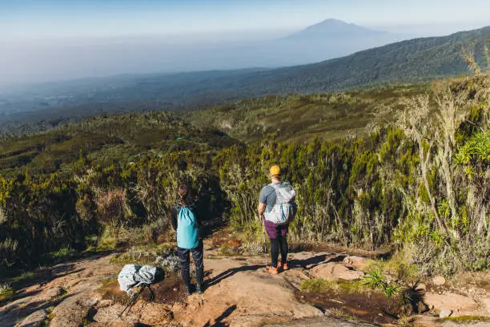
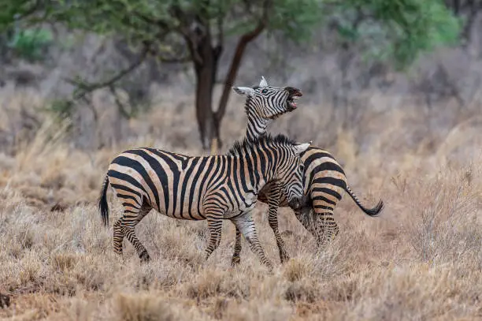

Photo Gallery




Discover one of Kenya’s hidden safari gems, where rivers, wildlife, and untamed wilderness create unforgettable adventures.
Meru National Park is one of Kenya’s most beautiful and least crowded safari destinations. Located in eastern Kenya, the park features rolling grasslands, riverine forests, swamps, and numerous rivers that support a rich diversity of wildlife.
The park is famous as the home of Elsa the Lioness, whose story was told in the book and film "Born Free." Today, visitors can encounter elephants, lions, leopards, cheetahs, buffaloes, giraffes, zebras, and a variety of antelope species.
With fewer crowds than many of Kenya’s famous parks, Meru offers an authentic wilderness experience and exceptional opportunities for wildlife viewing, photography, and nature exploration.
Visit the legendary home of Elsa the Lioness from Born Free.
Explore scenic rivers, swamps, and lush riverine forests.
Spot elephants, lions, cheetahs, giraffes, and abundant birdlife.


Experience one of Kenya’s most authentic wilderness adventures with Eagle Pam Expeditions.
Plan Your Safari